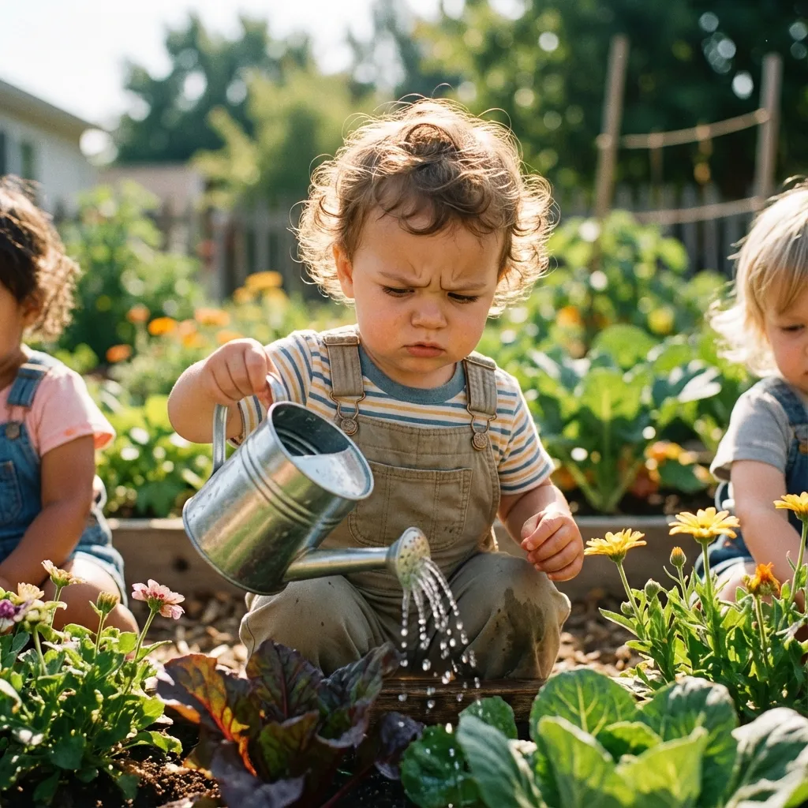
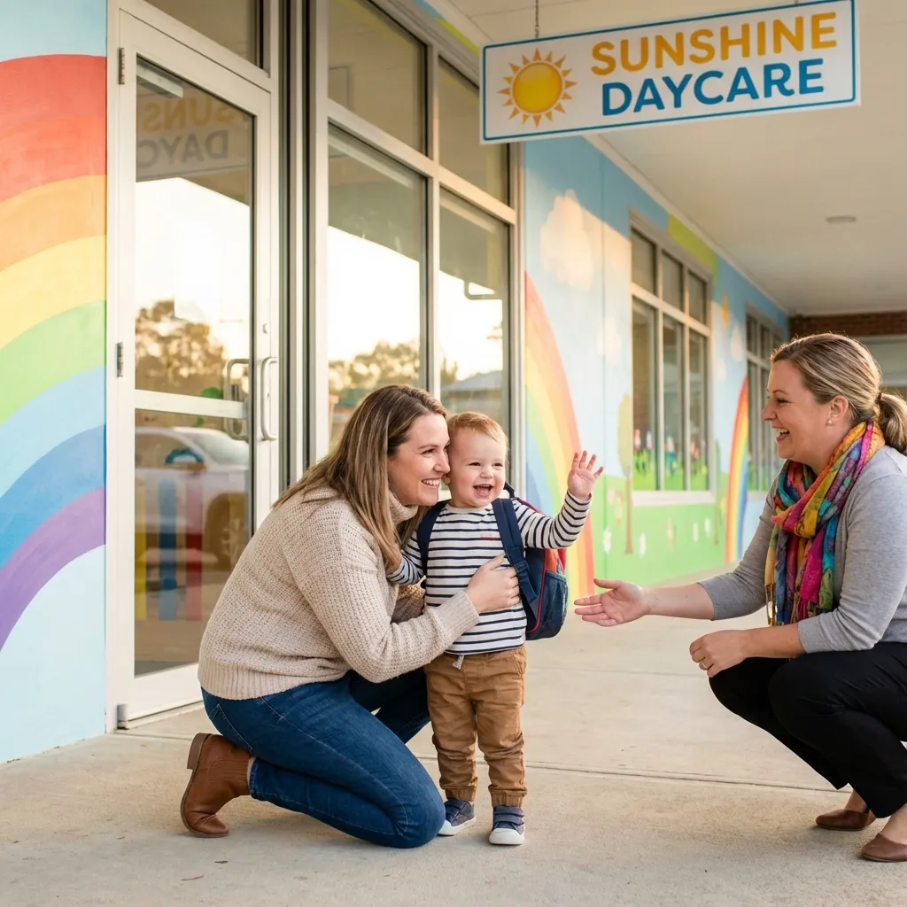
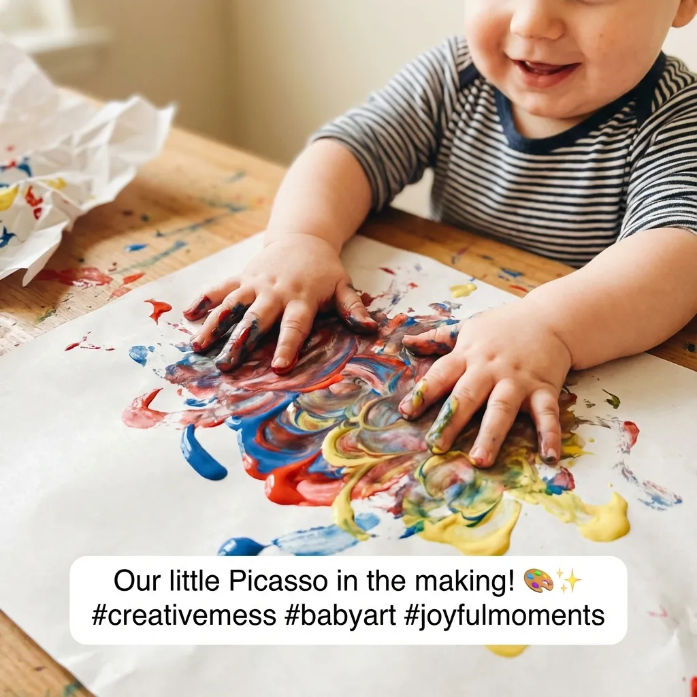

Pédagogie
Réussir l'adaptation en crèche
La familiarisation est une étape clé. Découvrez nos conseils pour une séparation en douceur.
Lire l'article →Les p’tits Babadins est un réseau national de plus de 110 micro-crèches privées. Nous offrons aux familles et aux entreprises un accueil personnalisé pour les enfants de 10 semaines à 4 ans, basé sur la bienveillance et la pédagogie active Reggio Emilia.
Les p'tits
Babadins est un acteur majeur de la petite enfance en France depuis
2006.
Notre réseau regroupe des structures à taille humaine (micro-crèches) conçues pour offrir un cadre
rassurant,
proche de l'environnement familial.
"Nous accompagnons chaque enfant vers l'autonomie et la socialisation, en plaçant son bien-être et son rythme au centre de notre projet pédagogique."
Le respect du rythme, des envies et de l’identité de l’enfant. Une écoute bienveillante qui s'étend aux familles et à nos équipes pour un soutien mutuel.
Un environnement sécurisant qui permet à l’enfant d’explorer et d’acquérir de nouvelles compétences librement, favorisant un développement psychomoteur libre.
Une pédagogie de la confiance et de l’autonomie où l’enfant est l’acteur principal, à l’initiative de son éveil et libre de ses mouvements.
Un réseau national de micro-crèches pour être au plus près des familles.
Trouvez la structure idéale pour votre enfant.
Une pédagogie active basée sur la confiance et l'autonomie.
Nous considérons l'enfant comme
l'acteur principal de son éveil, en respectant ses goûts, ses envies et son propre rythme de
développement.
Découvrez les retours d'expérience authentiques des familles qui nous font confiance au quotidien.
Basée sur 48 avis
Nous considérons les parents comme de véritables partenaires.
Au-delà de l'accueil de votre
enfant, nous construisons ensemble une relation de confiance.
Une solution de garde économique et valorisante qui favorise l'équilibre « Vie pro - Vie perso » de vos salariés. En réservant un berceau, vous offrez bien plus qu'un mode de garde : vous garantissez la sérénité.
Vous êtes passionné(e) par la Petite Enfance ?
Intégrez un réseau qui valorise votre expertise et vous accompagne au quotidien.
Vous souhaitez entreprendre dans un secteur porteur de sens ? Rejoignez le réseau Les p'tits Babadins et bénéficiez de notre expertise pour créer votre propre micro-crèche (franchise ou partenariat).
Pédagogie, santé, alimentation... Retrouvez nos articles pour vous accompagner au quotidien.
Tout ce que vous devez savoir pour l'accueil de votre enfant.
Vous pouvez effectuer une pré-inscription directement en ligne via notre formulaire dédié. C'est gratuit, rapide et sans engagement. Une fois la demande reçue, le directeur de la crèche concernée vous contactera pour faire le point sur vos besoins.
Le tarif dépend de vos revenus, du nombre d'enfants à charge et du volume d'heures de garde. En micro-crèche PAJE, vous avancez les frais mais bénéficiez du CMG (Complément de Libre Choix du Mode de Garde) de la CAF ainsi que d'un crédit d'impôt.
Nous accueillons généralement les enfants dès la fin du congé maternité (soit environ 10 semaines) et jusqu'à leur entrée à l'école maternelle (3-4 ans), voire jusqu'à 6 ans pour du périscolaire dans certaines structures.
Oui ! La majorité de nos crèches fournissent les repas, incluant le déjeuner et le goûter. Nous privilégions des produits frais, de saison et souvent bio, adaptés aux besoins nutritionnels de chaque âge et aux régimes spécifiques.
Absolument. La familiarisation est une étape clé pour le bien-être de l'enfant (et des parents !). Elle se déroule généralement sur une ou deux semaines, avec des temps de présence progressifs, pour permettre à l'enfant de découvrir son nouvel environnement en douceur.
Réservez dès maintenant une place pour votre enfant. Les places sont limitées dans nos micro-crèches pour garantir la qualité d'accueil.
Démarrer ma pré-inscription

Au cœur de nos crèches
Suivez le quotidien joyeux de nos petits explorateurs sur nos réseaux.


